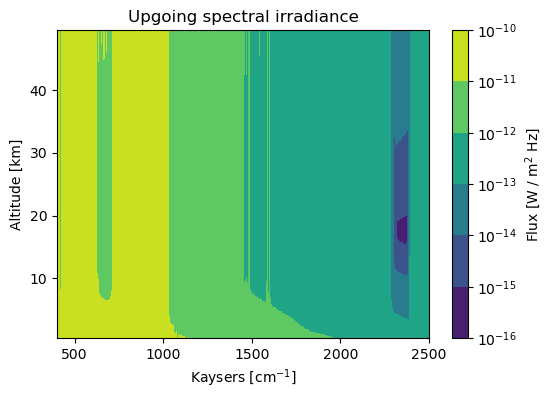
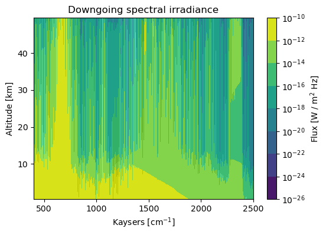

Spectral atmospheric flux operator
[1]:
import pyarts
import numpy as np
import matplotlib.pyplot as plt
from matplotlib import ticker
Initialize the operator
[2]:
fop = pyarts.recipe.SpectralAtmosphericFlux()
Get the atmosphere (optional)
The atmosphere is the full atmospheric field of ARTS as a dictionary, which is likely more than you wish to change. You may change only part of the atmosphere by simply creating a dictionary that only contains the fields that you want to change.
[3]:
atm = fop.get_atmosphere()
Get the profile flux for the given atm
Passing atm is optional, if not passed the operator will use the current atmosphere, which is the atmosphere that was set with the last call to __call__, or the constructor default if no call to __call__ has been made.
[4]:
kays = np.linspace(400, 2500, 10001)
flux, alts = fop(pyarts.arts.convert.kaycm2freq(kays), atm)
Plots
[5]:
plt.figure(1, figsize=(6, 4))
plt.clf()
plt.contourf(kays, alts/1e3, flux.up.T, 50, locator=ticker.LogLocator())
plt.xlabel("Kaysers [cm$^{-1}$]")
plt.ylabel("Altitude [km]")
cm = plt.colorbar()
cm.set_label("Flux [W / m$^2$ Hz]")
plt.title("Upgoing spectral irradiance")
[5]:
Text(0.5, 1.0, 'Upgoing spectral irradiance')

[6]:
plt.figure(1, figsize=(6, 4))
plt.clf()
plt.contourf(kays, alts/1e3, flux.down.T, 50, locator=ticker.LogLocator())
plt.xlabel("Kaysers [cm$^{-1}$]")
plt.ylabel("Altitude [km]")
cm = plt.colorbar()
cm.set_label("Flux [W / m$^2$ Hz]")
plt.title("Downgoing spectral irradiance")
/tmp/ipykernel_4543/2266432254.py:3: UserWarning: Log scale: values of z <= 0 have been masked
plt.contourf(kays, alts/1e3, flux.down.T, 50, locator=ticker.LogLocator())
[6]:
Text(0.5, 1.0, 'Downgoing spectral irradiance')
